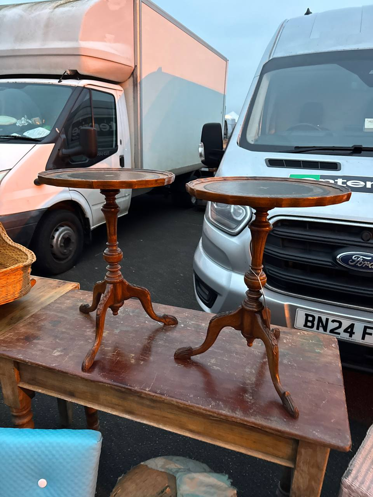
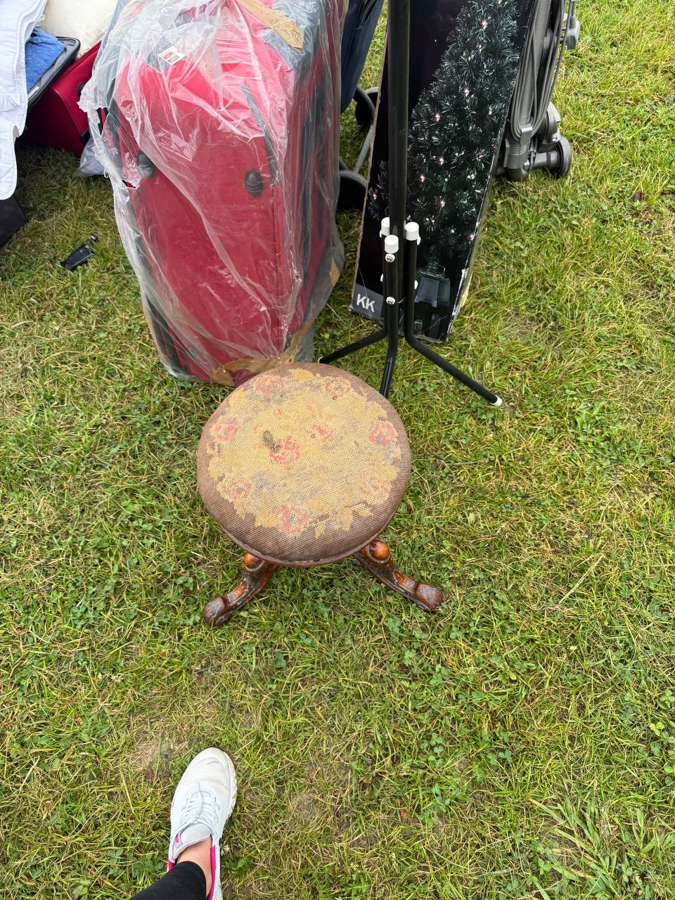
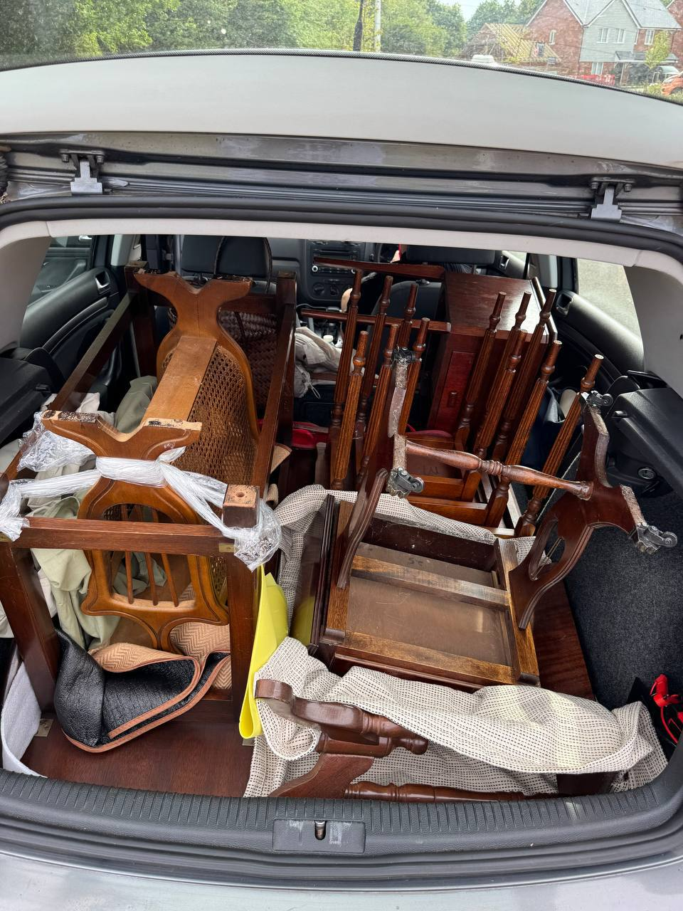

Last updated: 1 May 2026
Best UK Antiques Fairs 2026: A Reseller’s Calendar
The best UK antiques fairs for resellers in 2026 are Newark IACF, Ardingly IACF, Sunbury at Kempton, Detling, Shepton Mallet, and the Battersea Decorative Fair. Between them they cover ~30 trade days a year, every region of England, and every kind of stock from working-class car-boot crossover up to high-end interiors. This is a verified calendar with 2026 dates from each organiser, plus the trade-vs-public-day breakdown that determines whether you get the good stock or the leftovers.
If you only do one a year, do Newark. If you do one a month, alternate Sunbury Tuesdays with the Newark/Ardingly cycle. Beyond that, it depends on what you sell.
“The trade-day vs public-day distinction is the single thing most casual visitors miss. Pay £20 for the Thursday trade day at Newark, not £6 for the Friday — you’re not there for the experience, you’re there for stock.” — Oleksandr Prudnikov, FlipperHelper developer and active reseller
Last verified: 1 May 2026 against IACF, Sunbury Antiques Market, Love Fairs, and Arthur Swallow Fairs official websites.
What is the biggest antiques fair in the UK?
Newark IACF — up to 2,500 stalls across an 84-acre site at Newark Showground in Nottinghamshire, six events per year. The organiser promotes it as “Europe’s largest antiques fair” and the claim isn’t controversial; trade press and dealer guides repeat it consistently. Ardingly IACF is the largest in the South of England (~1,700 stalls), and Sunbury Antiques at Kempton is the largest twice-monthly fair (700+ stalls).

The 2026 calendar
Verified from each organiser’s official site. Dates can shift; check the organiser before driving.
Newark IACF International Antiques & Collectors Fair
- 2026 dates: 5–6 February, 26–27 March, 4–5 June, 13–14 August, 15–16 October, 10–11 December
- Location: Newark Showground, NG24 2NY
- Scale: Up to ~2,500 stalls across 84 acres. Self-described “Europe’s largest”
- Trade day: Thursday £20 from 9am
- Public day: Friday £6 from 9am
- Hours: Thu 9am–5pm; Fri 9am–4pm
- Official: iacf.co.uk/newark
Ardingly IACF International Antiques & Collectors Fair
- 2026 dates: 20–21 January, 3–4 March, 21–22 April, 23–24 June, 1–2 September, 3–4 November
- Location: South of England Showground, RH17 6TL
- Scale: Up to ~1,700 stalls. Largest fair in the South of England
- Trade day: Tuesday £20
- Public day: Wednesday £6
- Hours: Tue 9am–5pm; Wed 9am–4pm
- Official: iacf.co.uk/ardingly
Sunbury Antiques Market at Kempton Park
- 2026 dates: 2nd and last Tuesday of every month. Confirmed: 28 Apr, 12 & 26 May, 9 & 30 Jun, 14 & 28 Jul, 11 & 25 Aug, 8 & 29 Sep, 13 & 27 Oct, 10 & 24 Nov, 8 Dec 2026 (Q1 dates check organiser site)
- Location: Kempton Park Racecourse, Staines Road East, Sunbury-on-Thames, TW16 5AQ
- Scale: 700+ stalls indoor + outdoor
- Early entry: £5 from 6:30am (de facto trade slot — vans arrive ~5:30am)
- Public: Free 8:00am–2:00pm
- Outside ULEZ/LEZ: free parking, cash + contactless on the gate
- Official: sunburyantiques.com/kempton
Detling Antiques & Vintage Fair
- 2026 dates: 18–19 April, 6–7 June, 25–26 July, 5–6 September, 31 October–1 November
- Location: Kent Showground, ME14 3JF
- Scale: 300–400 sellers, indoor + outdoor
- Trade early: Saturday 8:30–10am £7
- Public: Saturday 10am–4:30pm £6; Sunday 10am–3:30pm £5
- Cash only at gate
- Official: lovefairs.com
Shepton Mallet Antiques Fair (IACF)
- 2026 dates: 13–15 March, 12–14 June, 18–20 September, 6–8 November (likely 2 more dates Jan + Aug — check organiser)
- Location: Royal Bath & West Showground, BA4 6QN
- Scale: 600+ stalls across 4 halls + Arcade. Biggest in the West Country
- Trade entry: Friday 12–5pm £10 (includes weekend re-entry)
- Public: Sat 9am–5pm £6; Sun 10am–4pm £6
- Official: iacf.co.uk/shepton-mallet
Lincoln Antiques & Home Show (Arthur Swallow Fairs)
- 2026 dates: 25 March, 3 June, 12 August, 14 October, 9 December (one-day Wednesdays)
- Location: Lincolnshire Showground, LN2 2NA
- Trade: 7–9am £15
- Public: 9am–4pm £5
- Official: asfairs.com
The Decorative Antiques & Textiles Fair (Battersea Park)
- 2026 dates: 20–25 January (winter), 12–17 May (spring), 29 September–4 October (autumn)
- Location: Evolution London, Battersea Park, SW11 4NJ
- Scale: ~130 specialist dealers (curated, high-end interior-design focus)
- Trade access: No separate trade day — single ticket. Public ~£15–20
- Hours: 6 days, typically 11am–7pm
- Official: decorativefair.com
Fairs that come up but aren’t happening in 2026
A few well-known UK antiques fairs no longer run or aren’t actually antiques fairs:
- Peterborough Festival of Antiques — cancelled permanently. The East of England Showground closed for housing redevelopment in July 2023. No future event scheduled. The final festival was in 2023
- Hatfield House “antiques fair” — Hatfield House hosts the Living Crafts Festival in May 2026 (7–10 May), which is a craft fair, not an antiques fair. Don’t go expecting brocante-style sourcing
- Battle Antiques Fair — we couldn’t find an active 2026 organiser of this name. Likely confused with Ardingly (the regional South-East anchor)
Trade day vs public day: the actual difference
The trade day is when the stock is. By the time the public day opens (Friday at Newark, Wednesday at Ardingly), the dealers in vans have already worked the rows. The £20 trade-day ticket isn’t about prestige — it’s about access.
The advice from r/Antiques and UK trade blogs is consistent: arrive when the gates open (9am Thursday at Newark, 9am Tuesday at Ardingly). Some serious sourcing dealers turn up at 5:30am to be at the front of the queue. By 11am the easiest finds are already loaded into vans.
One UK reseller’s rule that comes up repeatedly: “Treat trade day like a job. Empty van, empty wallet of small notes, walk fast, don’t haggle hard on the first lap — just buy. Haggle on the second lap if anything’s still there.”

What to bring to a UK antiques fair
- Cash — lots of it, in £20s and £50s. Many smaller dealers don’t take card, especially on trade day before they’ve set up properly
- A van or estate car. Newark and Ardingly are pure stand-up-and-load events. Furniture, large mirrors, lighting all need transport
- Tape measure. You will buy something that doesn’t fit the car otherwise
- Head torch for early entry — the indoor halls aren’t fully lit before 8am, and outdoor pitches at 6:30am Sunbury are dark in winter
- Phone with eBay sold-listings checker for spot-checking values on unfamiliar pieces. Field signal is patchy at Newark and Ardingly — download offline references first
- Wellies and waterproofs. Newark and Ardingly are showgrounds. Mud is real
- Snacks + water. Catering at fairs is overpriced
- FlipperHelper or your usual tracker to log every purchase with price + photo + category — FlipperHelper works offline which matters at Newark
Best fair for your stock category
- Furniture: Newark or Ardingly trade day. Sunbury for smaller pieces. Decorative Fair Battersea for high-end
- Smalls (jewellery, ceramics, silver, prints): Sunbury at Kempton is gold for this — twice-monthly cadence keeps stock fresh
- Vintage clothing & designer: Sunbury early entry. Vintage clothing also strong at Detling
- Books, ephemera, militaria: Newark and Ardingly trade day — specialist dealers from across UK + Europe
- Mid-century furniture (Ercol, G Plan): Newark first, Ardingly second. The Decorative Fair if you want already-curated high-margin pieces
- Beswick, Royal Doulton, Wedgwood: Sunbury and Detling have specialist dealers. Newark for volume

2026 quick reference
Pasting this into your phone calendar before the year is out is worth it. The big trade-day dates for UK resellers:
- Tue 20 January — Ardingly trade
- Thu 5 February — Newark trade
- Tue 3 March — Ardingly trade
- Thu 26 March — Newark trade
- Tue 21 April — Ardingly trade
- Thu 4 June — Newark trade
- Tue 23 June — Ardingly trade
- Thu 13 August — Newark trade
- Tue 1 September — Ardingly trade
- Thu 15 October — Newark trade
- Tue 3 November — Ardingly trade
- Thu 10 December — Newark trade
Plus 2nd and last Tuesday of every month for Sunbury at Kempton.
Frequently asked questions
What is the biggest antiques fair in the UK?
Newark IACF at Newark Showground (NG24 2NY) — up to 2,500 stalls across 84 acres, six times a year. Widely promoted as Europe’s largest antiques fair. Ardingly is the largest in the South of England with ~1,700 stalls.
When is Newark IACF 2026?
5–6 February, 26–27 March, 4–5 June, 13–14 August, 15–16 October, 10–11 December. Trade Thursday £20, public Friday £6.
When is Ardingly IACF 2026?
20–21 January, 3–4 March, 21–22 April, 23–24 June, 1–2 September, 3–4 November. Trade Tuesday £20, public Wednesday £6.
Should I pay for the trade day?
Yes if you’re sourcing for resale. £20 trade day at Newark or Ardingly buys you 6 hours’ head start before the £6 public day. Serious dealers fill vans by 11am Thursday/Tuesday — by Friday/Wednesday the easy finds are gone.
Which UK antiques fair is best for resellers?
For furniture and volume: Newark IACF or Ardingly IACF on trade day. For frequency and London accessibility: Sunbury at Kempton, twice-monthly Tuesdays. For curated higher-margin stock: The Decorative Fair Battersea.
Is Sunbury Antiques really every Tuesday?
The 2nd and last Tuesday of every month, year-round. Free entry from 8am, £5 early-bird from 6:30am, 700+ stalls indoor and outdoor at Kempton Park (TW16 5AQ).
Are these fairs cash only?
Most dealers take card now but cash is still preferred for haggling and faster on trade day before card readers are set up. Bring £20s and £50s. Detling is cash only at the gate.
Related reading
- UK Car Boot Sales Near Me: 2026 Sunday Calendar — cheaper sourcing, less curated, more weekend variety
- Portobello Road Market: A UK Reseller Guide — the Saturday London option
- Best French Brocantes 2026: UK Reseller Sourcing Calendar — if you want to upgrade from a Newark trip to a Lille one
- Best Items to Resell in the UK — what sells well after sourcing
Track your fair finds with FlipperHelper
Free app for iOS and Android. Log every Newark or Ardingly purchase at the stall — price, photo, source, listing platform. Works offline because field signal at showgrounds is unreliable. Multi-currency for when your next fair is across the Channel.
Download Free on the App StoreGet it Free on Google Play